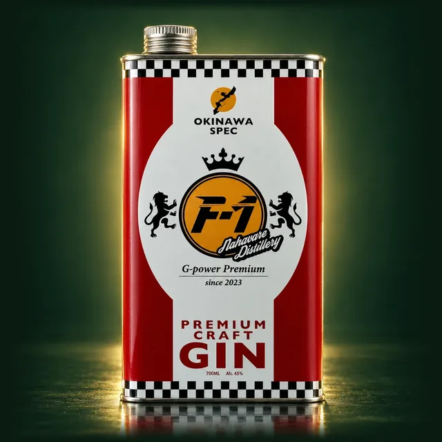

那覇晴蒸留所
沖縄県那覇市
沖縄県のクラフトジン蒸溜所。Gin-DBでは代表銘柄「F-1 GIN シーサーレッド」を掲載しています。
画像はイメージです
那覇晴蒸留所について
那覇晴蒸留所は、千葉県鎌ケ谷市に本店を構える酒屋の株式会社いずみやが、那覇市に設立したクラフトジンの蒸溜所です。2024年3月のリリースで、女性蒸留家が挑む蒸溜所として誕生が発表されました。公式によると、那覇国際通りに面した小さな蒸溜所です。醸造責任者はリィナさんで、島豚しゃぶしゃぶ & BAR NAHA晴レを併設しています。
銘柄一覧（1件）
PR ／ アフィリエイトリンクを含みます。
※ 参考価格は公式希望小売価格 or 市場実勢を記載時点で表示。実勢価格は楽天市場・Amazon等のリンク先で最新値をご確認ください。

画像はイメージですF-1 GIN シーサーレッド
アルコール度数 45% ／ 700ml
F-1 GINは、那覇晴蒸留所が造る四角い缶入りのクラフトジンです。「宜野座の純黒糖や島長胡椒などの沖縄産ボタニカルとジュニパーベリーを通常の2倍使用し」て造られています。赤いカラーをベースに沖縄のシーサーを左右に配した、「エンジンオイルの容器を思わせるような四角い缶デザイン」です。公式はソーダ割りでさらに香り高く楽しめるとしています。
ボタニカル: 宜野座産の純黒糖、島長胡椒などの沖縄産ボタニカルとジュニパーベリー
¥5,940 税込
※ 四角い缶入り。2025年8月1日発売
沖縄の他の蒸溜所
あわせて読む
蒸溜所情報
| 運営 | 那覇晴蒸留所（株式会社いずみや） |
| 所在地 | 沖縄県那覇市 |
| 創業・設立 | 2024年（蒸溜所開設） |
| 公式サイト | https://www.izumiya.net/ |
※ 掲載内容は公式サイト（一次ソース）を確認した時点のものです。製法・見学情報は公式サイトが、価格と在庫は楽天市場・Amazon・Yahoo!ショッピングのほうが更新が早いため、購入前は下記のリンク先でご確認ください。